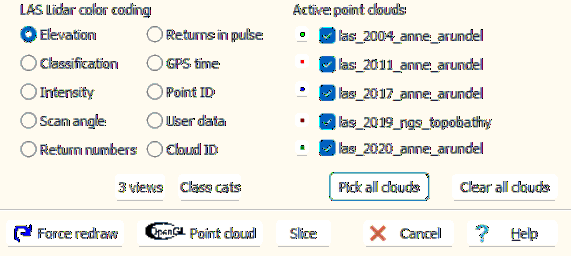

|
 |
Color coding chooses how to the point cloud. Some options may not
be available with a particular data sets, and will not appear on this
form. Other options may be included in the data, but with nothing
useful stored. The program saves the
display, so you can rapidly cycle through the options. Except for
the last option, all come from the LAS file.
- Elevation--you might to adjust the color scale
to avoid the effect of noise such as bird strikes.
- Classification--many data sets have no classifiction, or limited
classification.
- Intensity--some data sets may not have this set. This will
be scaled differently for each cloud, based on the intensity values
in each, and you may have to adjust the color scaling on the
Draw tab.
- Return number--some data sets may not have this set.
- Returns in pulse--large number of returns usually means
vegetation.
- Scan angle--older data sets might not have this set. This
can show the flight direction, parellel to lines of constant scan
angle.
- GPS time--older data sets might not have this set. This
can show the flight direction, but might have scaling issues if the
times have big gaps.
- RGB--many data sets will not have this set. This will be
scaled differently for each cloud, based on the intensity values in
each, and you may have to adjust the color scaling on the
Draw tab.
- Return number--some data sets may not have this set.
- Point source ID
- User Data
- Cloud ID--the order in which the clouds were opened. Only
available if there are 2 or more clouds open.
|